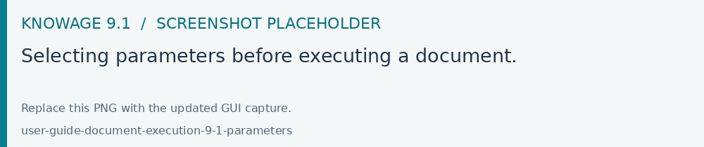
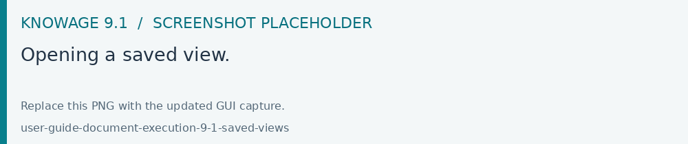
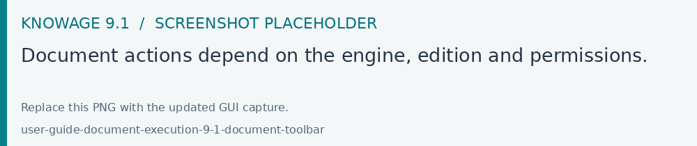

Running and exploring documents
Open a document from Documents Browser, Workspace or a configured menu. Knowage loads it with the engine assigned by its author. A Dashboard and a Cockpit have separate execution and authoring flows in 9.1.
Parameters
Open the parameter panel when the document requires input.
Fill in required parameters, marked with an asterisk. Select list values or enter a value according to the control provided.
For a list or tree parameter, use search to find the required values. The parameter dialog supports successive searches while selecting values.
Choose Execute to apply the parameter set and load the analysis.
Date controls respect the minimum and maximum values configured by the author. For dependent parameters, select the controlling value first, then check the available values of the dependent parameter.
Use Reset to clear the entered parameter values. When defaults and optional parameters allow it, the document may execute immediately on opening.

Fig. 4 Selecting parameters before executing a document.
Saved views
Use Views in the document toolbar menu to open the Saved views list. For a Dashboard, the list is accessible before the first execution, allowing you to start from an existing saved view.
After loading the document and setting the desired values, choose Save current view, enter a meaningful name and select the sharing options available to your role. Reopen the view to restore its saved configuration. Views retain the access rules of the underlying document and data.

Fig. 5 Opening a saved view.
Document toolbar
The toolbar menu shows the actions available for the current document and role. Use the labelled commands to refresh the analysis, open its parameters, manage views, export, open full screen or return to the browsing area.
Where enabled, Info contains metadata, notes and rating. Shortcuts can provide scheduled executions and commands to add the document to Workspace, copy a link or obtain HTML embedding code.

Fig. 6 Document actions depend on the engine, edition and permissions.
Exporting results
Apply the desired parameters and selections.
Open Export from the document toolbar, or the export command on a widget.
Choose one of the formats offered by that engine.
Retrieve the generated file; for asynchronous exports, check Downloads.
Dashboard authors can configure the export filename and XLSX worksheet names. Table PDF exports and drill-down chart spreadsheet exports have additional options. Available formats depend on the engine and export services installed.
Scheduled executions
If your administrator has scheduled a document and enabled access to its snapshots, open Shortcuts > Show scheduled executions. A snapshot shows the data captured at its execution time. The scheduler guide explains how authorized users configure schedules.